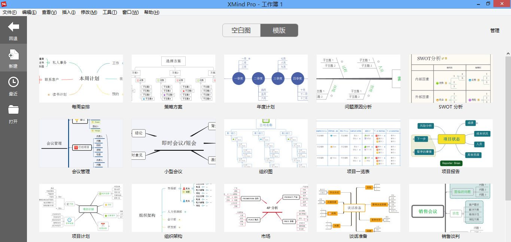
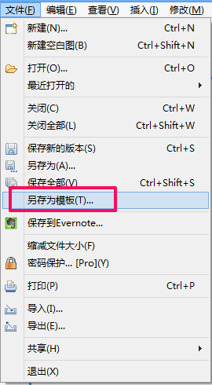

模板
XMIND中的模板是独立的“.XMT”文件。它们可以单独传播。XMIND自带了21种模板: 任务清单、旅行计划、销售谈判、鱼骨图、流程图、组织结构图、二维图等。 XMIND还允许并鼓励用户创建属于自己的的思维图模板。
从模板创建新的思维图:- 在主页面板选择“模板”；
- 在模板页面单击模板创建新思维图。

创建自己的模板:
- 新建带结构的思维图并添加子主题；
- 根据自己的喜好设置样式，如墙纸、主题字体等。
- 在菜单栏点击“文件 - 保存为模板”；
- 保存您的模板。

添加模板到XMind:- 点击模板页面右上角的“管理”；
- 单击“添加”按钮；
- 选择您要添加的模板。